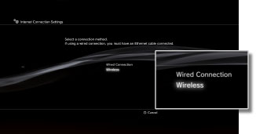
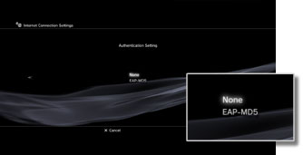
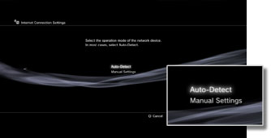
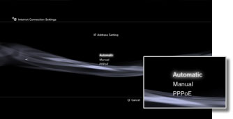
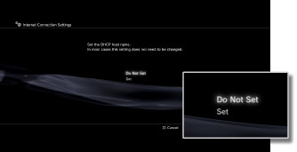
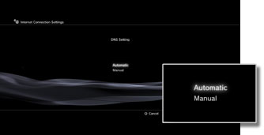
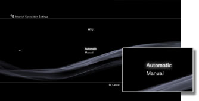
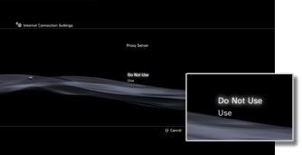
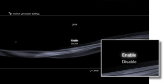

Settings > Network Settings > Internet Connection Settings (advanced settings)
Internet Connection Settings (advanced settings)
If you are unable to connect to the Internet with basic settings, change your settings as necessary. Adjust each item as necessary for your particular network environment.
1. |
Select |
|---|---|
2. |
Select [Internet Connection Settings]. |
3. |
Select [Custom]. |
 (Settings) >
(Settings) >  (Network Settings).
(Network Settings).Connection Method
Set the method for connecting to the Internet. This setting is available only on PS3™ systems that are equipped with the wireless LAN feature.

| Wired Connection | Make a wired connection using an Ethernet cable |
|---|---|
| Wireless | Make a wireless connection via a wireless LAN |
WLAN Settings
Set the SSID of the access point. This setting is available only on PS3™ systems that are equipped with the wireless LAN feature.

| Scan | Scan for a nearby access point. Select this setting when you do not know the SSID of the access point. The system will detect nearby access points and display information on the SSID and security settings. |
|---|---|
| Enter Manually | Specify the access point by entering its SSID manually using a keyboard. Select this setting when you know the SSID. |
| Automatic | Use the automatic setting feature of the access point. This setting is available only in regions where PS3™ systems that support this feature are sold. Select this setting when using an access point that supports automatic setup. Follow the on-screen instructions. |
WLAN Security Setting
Set an encryption key for an access point. This setting is available only on PS3™ systems that are equipped with the wireless LAN feature.

| None | Do not set an encryption key. |
|---|---|
| WEP | Set an encryption key. The encryption key can be entered on the next screen. The encryption key is displayed as a series of asterisks. |
| WPA-PSK / WPA2-PSK |
Authentication Setting
These settings are available only on PS3™ systems sold in Korea and are available only on PS3™ systems that are equipped with the wireless LAN feature.

| None | Do not set authentication information. |
|---|---|
| EAP-MD5 | Set authentication information when using public WLAN services. Enter your user ID and password on the next screen. For details, refer to the information supplied by the public WLAN service provider. |
Ethernet Operation Mode
Set the Ethernet data transfer rate and operation method. Usually select [Auto-Detect].

| Auto-Detect | Automatically set basic settings. |
|---|---|
| Manual Settings | Manually adjust the Ethernet data transfer rate and operation method. |
IP Address Setting
Set the method for obtaining an IP address when connecting to the Internet.

| Automatic | Use the IP address allocated by the DHCP server. You can enter the DHCP server host name on the next screen. |
|---|---|
| Manual | Set the IP address manually. You can enter values for the IP address, subnet mask, default router and primary and secondary DNS on the next screen. |
| PPPoE | Connect to the Internet using PPPoE. You can enter your user ID and password on the next screen. |
DHCP
Set the DHCP host name. Usually select [Do Not Set].

| Do Not Set | Do not set the DHCP host name. |
|---|---|
| Set | Set the DHCP host name. |
DNS Setting
Set the DNS server.

| Automatic | Automatically acquire the DNS server address. |
|---|---|
| Manual | Manually enter the DNS server address. |
MTU
Configure the MTU value used when transmitting data. Usually select [Automatic].

| Automatic | Automatically set the MTU value. |
|---|---|
| Manual | Specify the maximum size of data packets (in bytes) that can be sent in one transmission. |
Proxy Server
Set the proxy server to be used.

| Do Not Use | Do not use a proxy server. |
|---|---|
| Use | Use a proxy server. You can enter the proxy server address and port number on the next screen. |
UPnP
Set to enable or disable UPnP (Universal Plug and Play).

| Enable | Enable UPnP. |
|---|---|
| Disable | Disable UPnP. |
Hint
If set to [Disable], communication with others may be restricted when using the voice / video chat feature or communication features of games.